الحوض العظميBony Pelvis
عملي · م01 · 6.0 دقيقةأقسام المحاضرة (10)
- عظام الحوضBones of the Pelvis
- العجزSacrum
- العصعص، والعجز في الأشعة والمفراسCoccyx; Sacrum on X-ray and CT
- عظم الورك: المنظران الوحشي والإنسيThe Hip Bone: Lateral and Medial Views
- العانةPubis
- الإسكIschium
- حوض الذكر وحوض الأنثىMale vs Female Pelvis
- الصورة الشعاعية للحوض (الأمامية الخلفية)Pelvic radiography (AP view)
- مفراس الحوضPelvic CT Scan
- دواعي رنين الحوضPelvic MRI Indications
عظام الحوضBones of the Pelvis
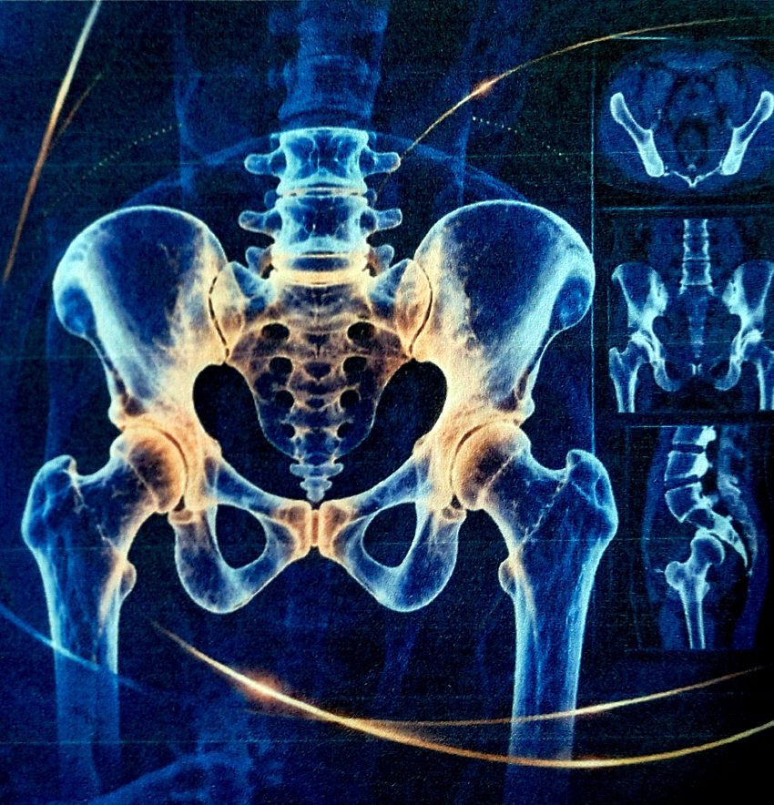
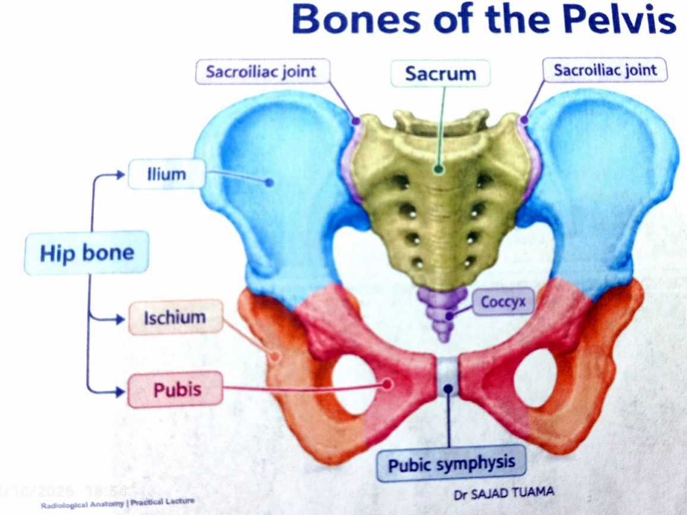
- • There are three bones of the pelvis: the hip bone, sacrum and coccyx.للحوض ثلاثة عظام: عظم الورك، والعجز، والعصعص.
- • Hip bone consists of: ilium, ischium and pubis.يتكوّن عظم الورك من: الحرقفة، والإسك، والعانة.
- • Posterior midline: sacrum and coccyx.في الخط الناصف الخلفي: العجز والعصعص.
- • Ring joints: sacroiliac joints and pubic symphysis.مفاصل الحلقة الحوضية: المفصلان العجزيان الحرقفيان والارتفاق العاني.
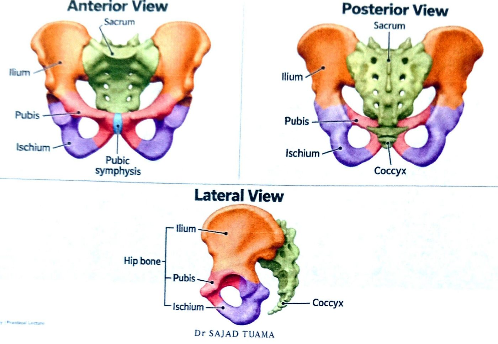
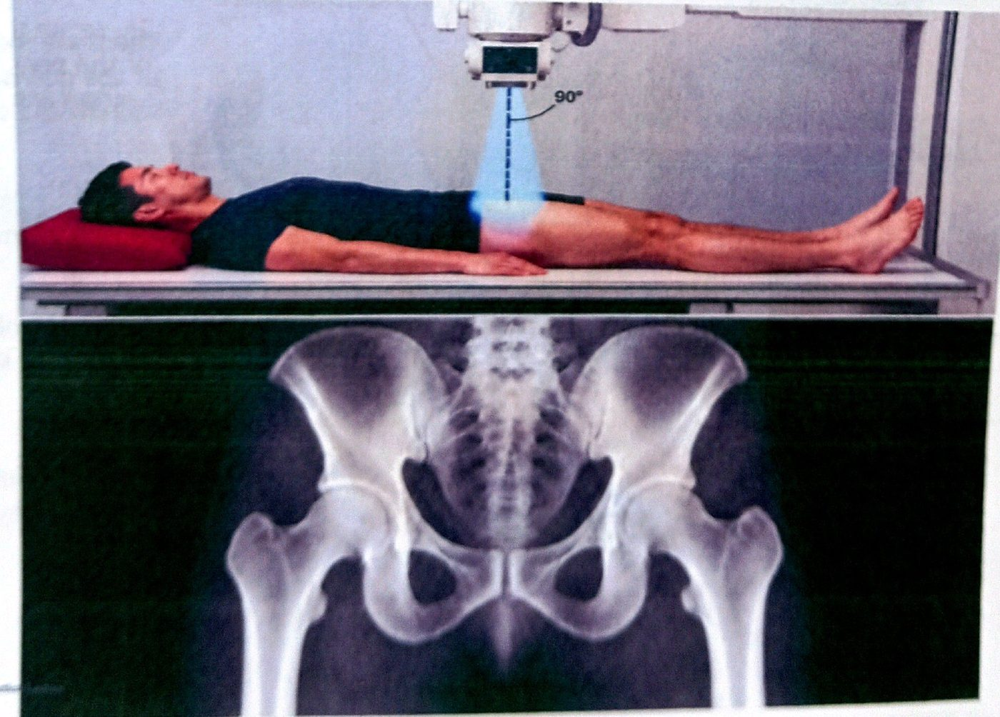
العجزSacrum
العجز: المنظران الأمامي والخلفيSacrum: Anterior and Posterior Views
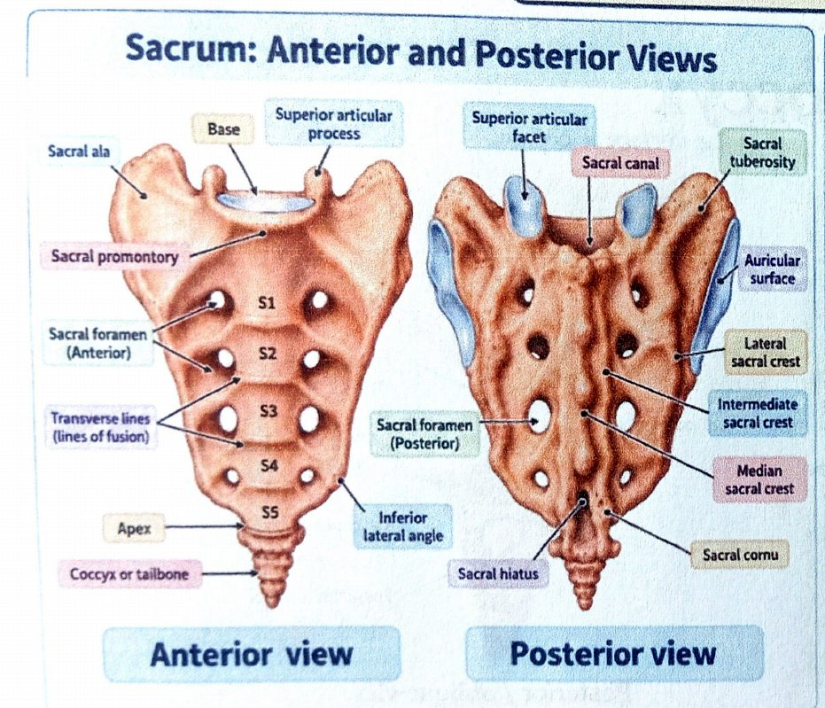
- • Sacral promontoryالرعن العجزي: الحافة الأمامية البارزة لقاعدة العجز (في المنظر الأمامي).
- • Transverse lines (lines of fusion)الخطوط المستعرضة (خطوط الالتحام) بين الفقرات العجزية.
- • Sacral hiatusالفرجة العجزية في أسفل المنظر الخلفي.
العجز وعلاقته بالعمود الفقري والحوض والألياف العصبيةSacrum in Relation to Spine, Pelvis and Nerve Fibers
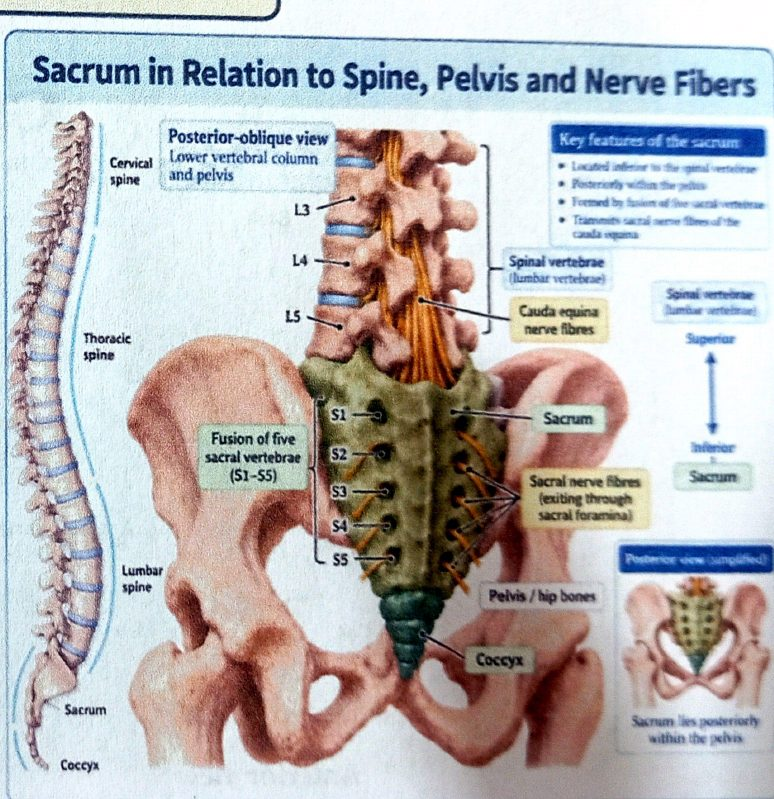
قبل الالتحام وبعدهBefore fusion / After fusion (Sacrum)
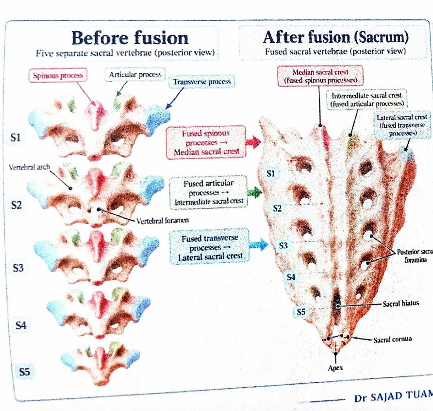
- • Fused spinous processes → Median sacral crestالنواتئ الشوكية الملتحمة ← العرف العجزي الناصف
- • Fused articular processes → Intermediate sacral crestالنواتئ المفصلية الملتحمة ← العرف العجزي المتوسط
- • Fused transverse processes → Lateral sacral crestالنواتئ المستعرضة الملتحمة ← العرف العجزي الوحشي
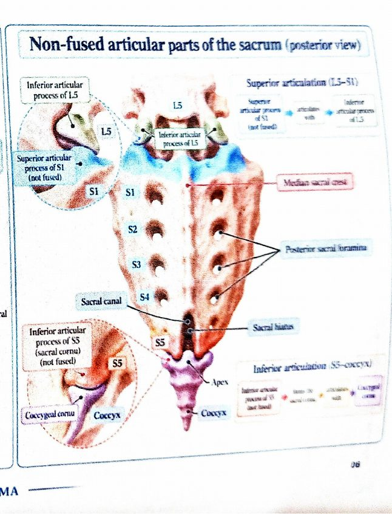
العصعص، والعجز في الأشعة والمفراسCoccyx; Sacrum on X-ray and CT
العصعصCoccyx
Tailbone - terminal part of the vertebral column
عظم الذنب: الجزء الانتهائي من العمود الفقري.
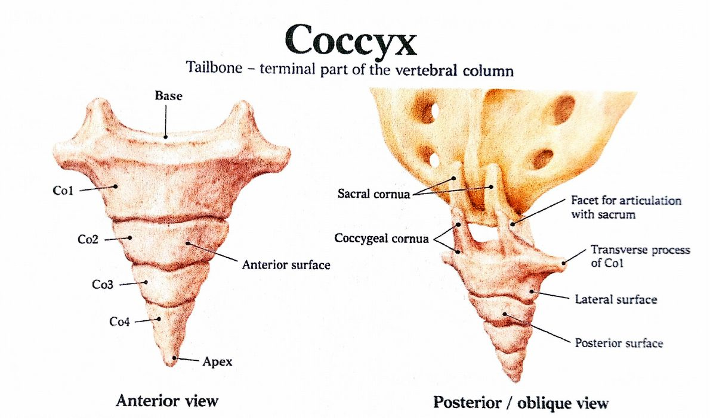
- • The coccyx (tailbone) is the terminal part of the vertebral column.العصعص (عظم الذنب) هو الجزء الانتهائي من العمود الفقري.
- • It is formed by 4 fused vertebrae, giving it a triangular shape.يتكوّن من 4 فقرات ملتحمة، وهذا يعطيه شكلاً مثلثياً.
- • Base: superior, articulates with the sacrum.القاعدة: في الأعلى، وتتمفصل مع العجز.
- • Apex: inferior end of the vertebral column.القمة: النهاية السفلية للعمود الفقري.
- • Lateral surfaces show the small transverse process of Co1.يظهر على السطحين الوحشيين الناتئان المستعرضان الصغيران للفقرة العصعصية الأولى Co1.
- • Coccygeal cornua of Co1 project upward to articulate with the sacral cornua.القرنان العصعصيان للفقرة Co1 يبرزان إلى الأعلى ليتمفصلا مع القرنين العجزيين.
العجز في الصورة الشعاعيةSacrum
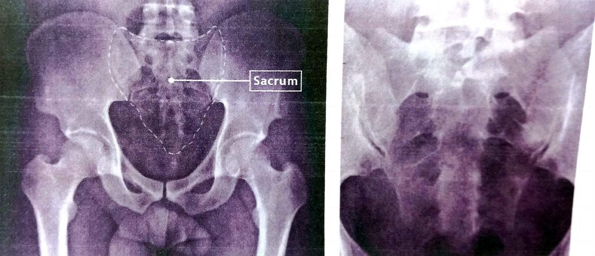
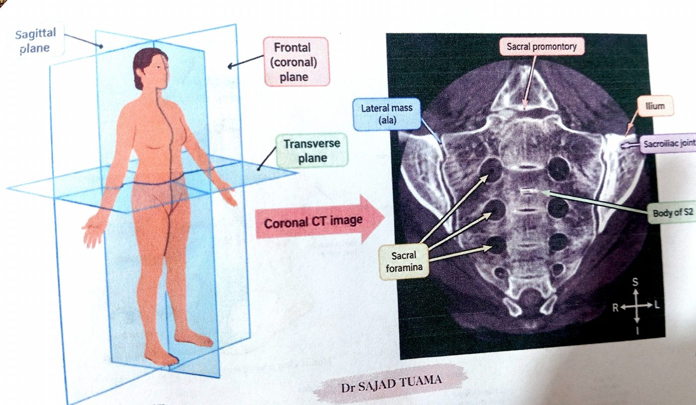
عظم الورك: المنظران الوحشي والإنسيThe Hip Bone: Lateral and Medial Views
عظم الوركThe Hip Bone
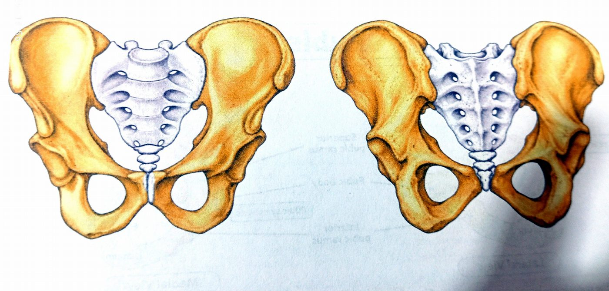
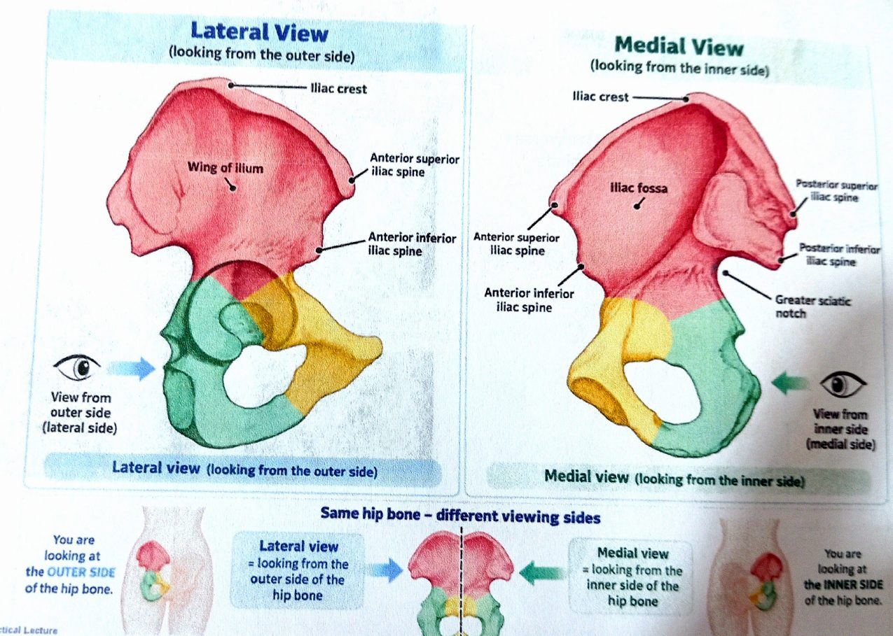
- • Lateral view = looking from the outer side of the hip boneالمنظر الوحشي = النظر من الجهة الخارجية لعظم الورك
- • Medial view = looking from the inner side of the hip boneالمنظر الإنسي = النظر من الجهة الداخلية لعظم الورك
- • You are looking at the OUTER SIDE of the hip bone.(في المنظر الوحشي) أنت تنظر إلى الجهة الخارجية لعظم الورك.
- • You are looking at the INNER SIDE of the hip bone.(في المنظر الإنسي) أنت تنظر إلى الجهة الداخلية لعظم الورك.
Same hip bone - different viewing sides
نفس عظم الورك – جهات نظر مختلفة.
العانةPubis
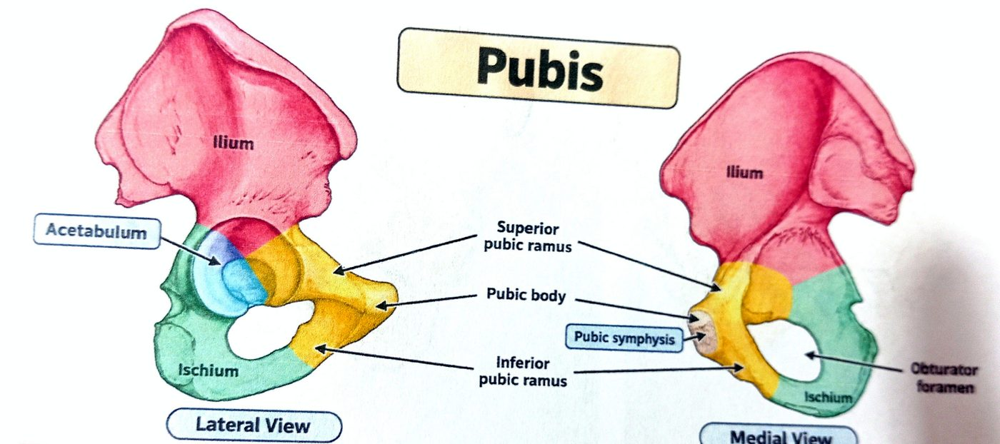
- • The pubis is the most anterior part of the hip bone.العانة هي الجزء الأكثر أماميةً من عظم الورك.
- • It consists of: body, superior ramus, and inferior ramus (ramus = branch).تتكوّن من: جسم، وفرع علوي، وفرع سفلي (الفرع = غصن).
- • Pubic body: medial; articulates with the opposite pubic body at the pubic symphysis.جسم العانة: في الجهة الإنسية، ويتمفصل مع جسم العانة المقابل عند الارتفاق العاني.
- • Superior aspect of the pubic body shows the pubic crest and pubic tubercle.يظهر على الجهة العلوية لجسم العانة العرف العاني والحديبة العانية.
- • Superior pubic ramus extends laterally and forms part of the acetabulum.الفرع العاني العلوي يمتد وحشياً ويكوّن جزءاً من الحُقّ.
- • Inferior pubic ramus projects toward the ischium.الفرع العاني السفلي يتّجه نحو الإسك.
الإسكIschium
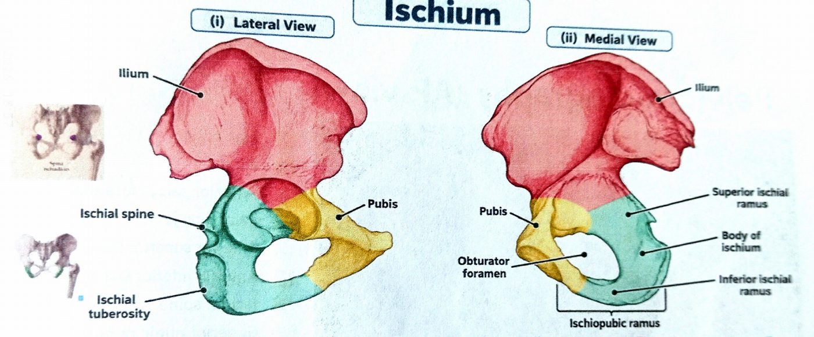
- • The ischium forms the posteroinferior part of the hip bone.يكوّن الإسك الجزء الخلفي السفلي من عظم الورك.
- • It consists of a body, a superior ramus and an inferior ramus.يتكوّن من جسم، وفرع علوي، وفرع سفلي.
- • The inferior ischial ramus joins the inferior pubic ramus to form the ischiopubic ramus.الفرع الإسكي السفلي يلتحم بالفرع العاني السفلي ليكوّنا الفرع الإسكي العاني.
- • The ischiopubic ramus encloses part of the obturator foramen.الفرع الإسكي العاني يحيط بجزء من الثقبة السدّادية.
- • The posteroinferior aspect forms the ischial tuberosity, which bears body weight during sitting.تكوّن الجهة الخلفية السفلية الحدبة الإسكية، وهي التي تحمل وزن الجسم في أثناء الجلوس.
- • Near the junction of the superior ramus and body is the ischial spine.قرب ملتقى الفرع العلوي بالجسم توجد الشوكة الإسكية.
حوض الذكر وحوض الأنثىMale vs Female Pelvis
Simplified anatomical differences
الفروق التشريحية بصورة مبسّطة.
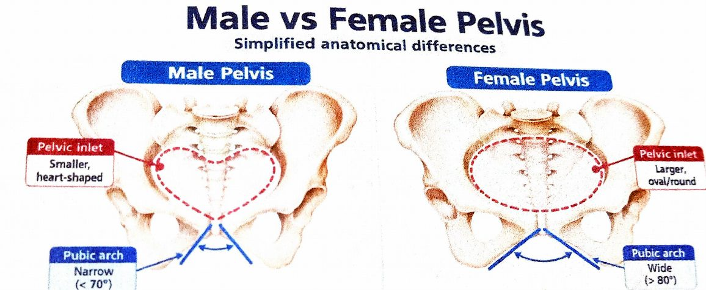
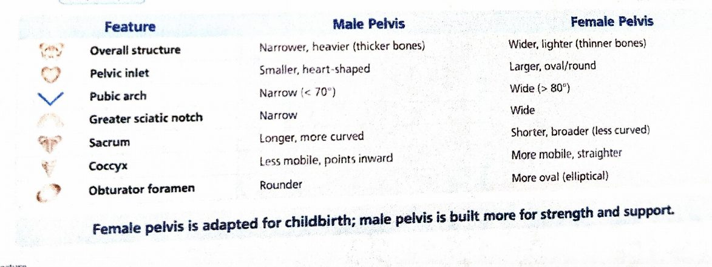
- • Overall structure: Narrower, heavier (thicker bones) | Wider, lighter (thinner bones)البنية العامة: الذكر أضيق وأثقل (عظام أسمك) | الأنثى أعرض وأخف (عظام أرق)
- • Pelvic inlet: Smaller, heart-shaped | Larger, oval/roundمدخل الحوض: الذكر أصغر وقلبي الشكل | الأنثى أكبر وبيضوي/دائري
- • Pubic arch: Narrow (< 70°) | Wide (> 80°)القوس العاني: الذكر ضيّق (أقل من 70 درجة) | الأنثى عريض (أكثر من 80 درجة)
- • Greater sciatic notch: Narrow | Wideالثلمة الوركية الكبرى: الذكر ضيّقة | الأنثى عريضة
- • Sacrum: Longer, more curved | Shorter, broader (less curved)العجز: الذكر أطول وأكثر تقوّساً | الأنثى أقصر وأعرض (أقل تقوّساً)
- • Coccyx: Less mobile, points inward | More mobile, straighterالعصعص: الذكر أقل حركة ويتّجه إلى الداخل | الأنثى أكثر حركة وأكثر استقامة
- • Obturator foramen: Rounder | More oval (elliptical)الثقبة السدّادية: الذكر أكثر استدارة | الأنثى أكثر بيضوية (إهليلجية)
Female pelvis is adapted for childbirth; male pelvis is built more for strength and support.
حوض الأنثى مهيّأ للولادة؛ وحوض الذكر مبنيّ أكثر للقوة والإسناد.
الصورة الشعاعية للحوض (الأمامية الخلفية)Pelvic radiography (AP view)
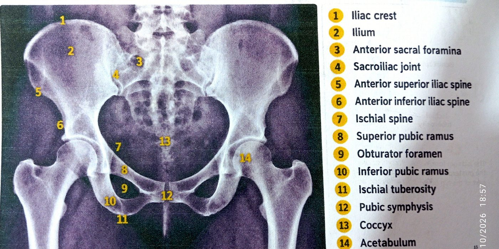
- • Iliac crestالعرف الحرقفي
- • Iliumالحرقفة
- • Anterior sacral foraminaالثقوب العجزية الأمامية
- • Sacroiliac jointالمفصل العجزي الحرقفي
- • Anterior superior iliac spineالشوكة الحرقفية الأمامية العلوية
- • Anterior inferior iliac spineالشوكة الحرقفية الأمامية السفلية
- • Ischial spineالشوكة الإسكية
- • Superior pubic ramusالفرع العاني العلوي
- • Obturator foramenالثقبة السدّادية
- • Inferior pubic ramusالفرع العاني السفلي
- • Ischial tuberosityالحدبة الإسكية
- • Pubic symphysisالارتفاق العاني
- • Coccyxالعصعص
- • Acetabulumالحُقّ
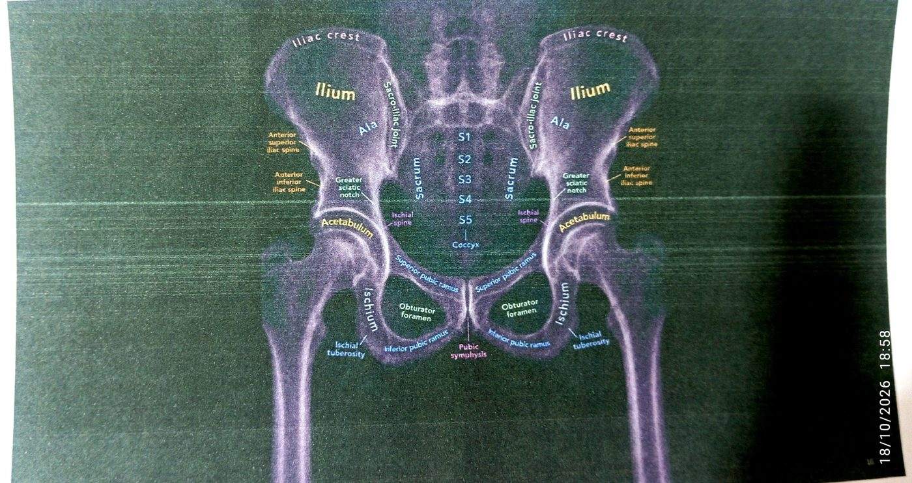
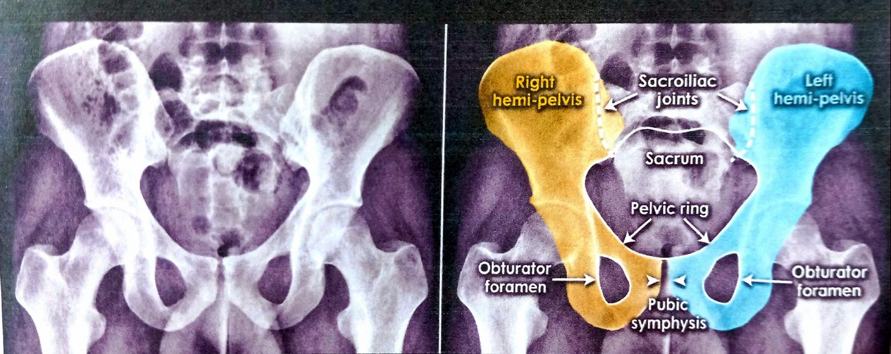
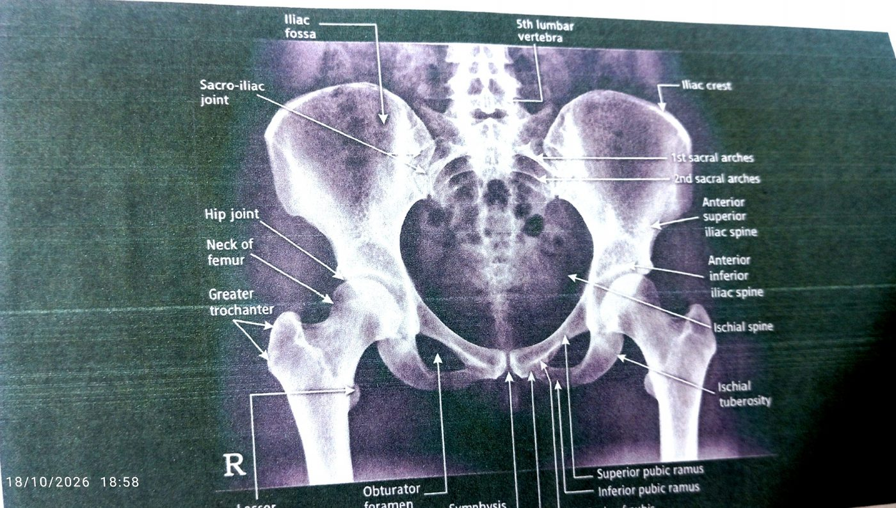
مفراس الحوضPelvic CT Scan
- • Patient position during CTوضعية المريض في أثناء فحص المفراس CT
- • Axial sliceالمقطع المحوري
- • Coronal sliceالمقطع الإكليلي
- • Sagittal sliceالمقطع السهمي
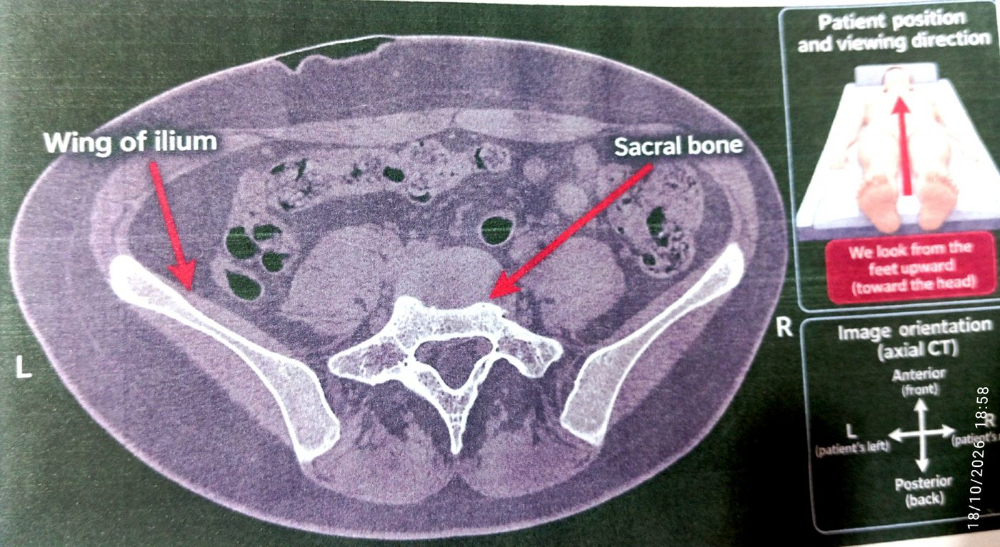
- • Patient position and viewing direction: We look from the feet upward (toward the head)وضعية المريض واتجاه النظر: ننظر من القدمين إلى الأعلى (باتجاه الرأس)
- • Image orientation (axial CT): Anterior (front), Posterior (back)اتجاهات الصورة (المفراس المحوري): أمامي، وخلفي
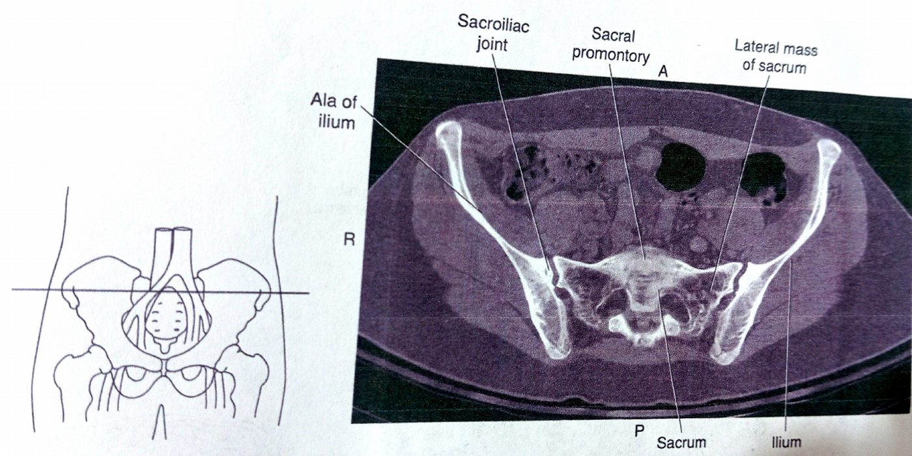
المفراس المحوري للحوضAxial CT of the Pelvis
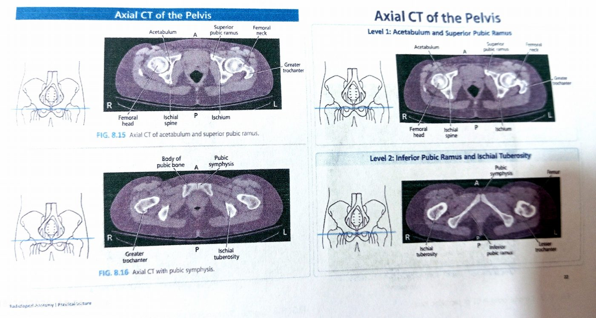
- • Level 1: Acetabulum and Superior Pubic Ramusالمستوى 1: الحُقّ والفرع العاني العلوي
- • Level 2: Inferior Pubic Ramus and Ischial Tuberosityالمستوى 2: الفرع العاني السفلي والحدبة الإسكية
- • FIG. 8.15 Axial CT of acetabulum and superior pubic ramus.الشكل 8.15: مقطع مفراس محوري للحُقّ والفرع العاني العلوي.
- • FIG. 8.16 Axial CT with pubic symphysis.الشكل 8.16: مقطع مفراس محوري يظهر فيه الارتفاق العاني.
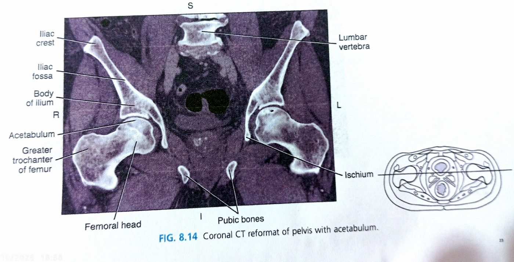
FIG. 8.14 Coronal CT reformat of pelvis with acetabulum.
الشكل 8.14: إعادة بناء إكليلية بالمفراس للحوض يظهر فيها الحُقّ.
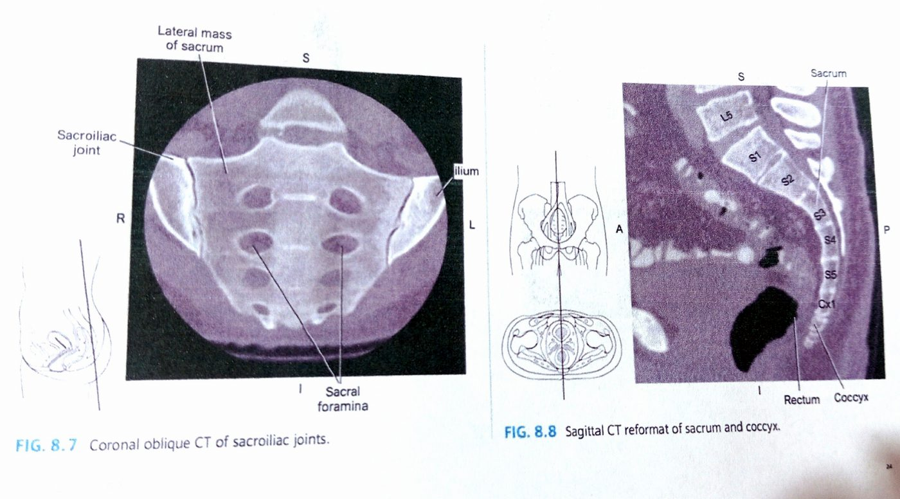
- • FIG. 8.7 Coronal oblique CT of sacroiliac joints.الشكل 8.7: مفراس إكليلي مائل للمفصلين العجزيين الحرقفيين.
- • FIG. 8.8 Sagittal CT reformat of sacrum and coccyx.الشكل 8.8: إعادة بناء سهمية بالمفراس للعجز والعصعص.
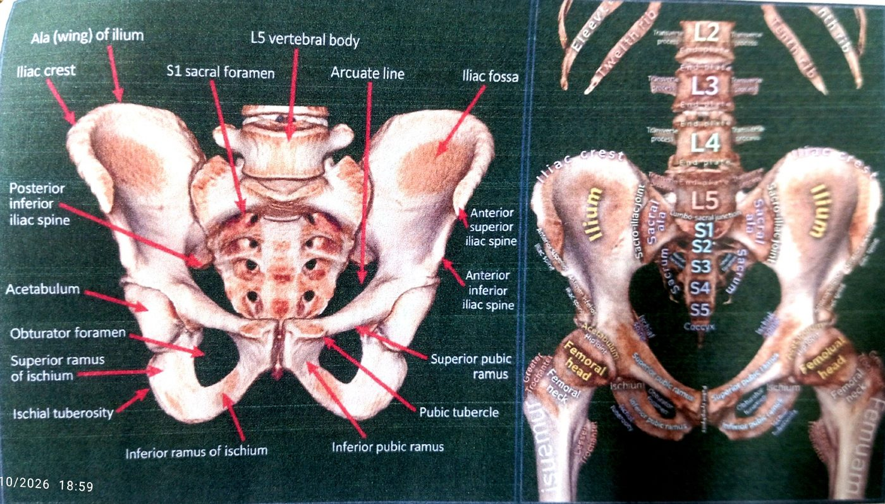
دواعي رنين الحوضPelvic MRI Indications
دواعي فحص الرنين المغناطيسي للحوضIndications for Pelvic MRI
- • Occult fracturesالكسور الخفية
- • Bone marrow edemaوذمة نقي العظم
- • Avascular necrosis of femoral headالنخر اللاوعائي لرأس عظم الفخذ
- • Sarcoilittisالتهاب المفصل العجزي الحرقفي
- • Muscle and tendon injuriesإصابات العضلات والأوتار
- • Labral injury of the hipإصابة الشفا الحُقّي لمفصل الورك
- • Pelvic tumorsأورام الحوض
- • Infection / osteomyelitisالعدوى / التهاب العظم والنقي
- • Soft tissue assessmentتقييم الأنسجة الرخوة
- • When X-ray or CT is inconclusiveعندما تكون الأشعة السينية أو المفراس غير حاسمة
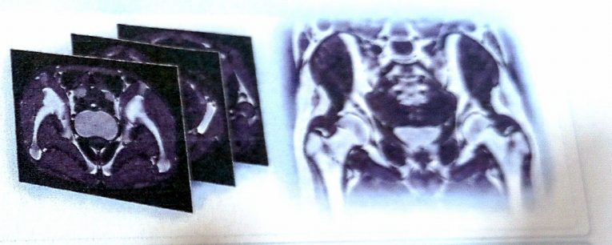
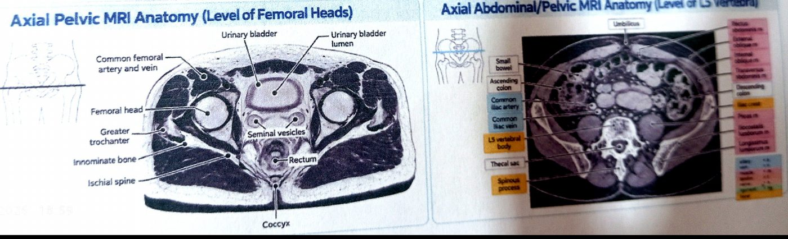
- • Axial Pelvic MRI Anatomy (Level of Femoral Heads)تشريح الرنين المحوري للحوض (بمستوى رأسي عظم الفخذ)
- • Axial Abdominal/Pelvic MRI Anatomy (Level of L5 Vertebra)تشريح الرنين المحوري للبطن والحوض (بمستوى الفقرة L5)
Anatomy is the key to understanding pelvic imaging. Thank you
التشريح هو مفتاح فهم تصوير الحوض. شكراً لكم.
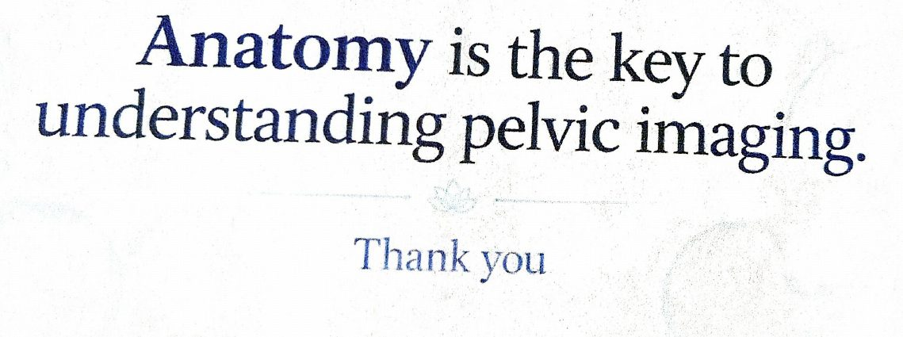
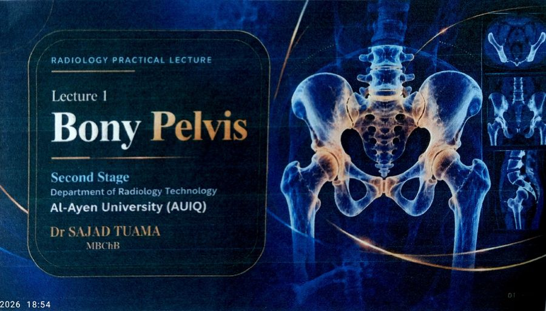
الترجمة العربية
RADIOLOGY PRACTICAL LECTURE
Lecture 1
Bony Pelvis
Second Stage
Department of Radiology Technology
MBChB
2026 18:54
محاضرة عملية في الأشعة
المحاضرة الأولى
الحوض العظمي
المرحلة الثانية
قسم تقنيات الأشعة
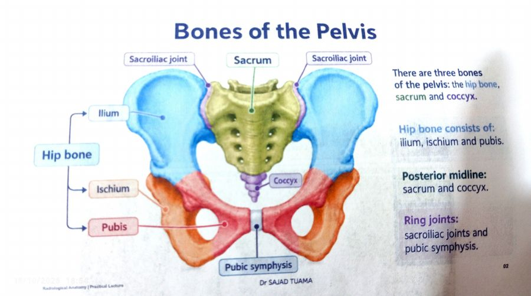
الترجمة العربية
Sacroiliac joint
Bones of the Pelvis
Sacrum
Sacroiliac joint
There are three bones
of the pelvis: the hip bone,
sacrum and coccуx.
llium
Hip bone
Соссух
Ischium
Pubis
Hip bone consists of:
ilium, ischium and pubis.
Posterior midline:
sacrum and coccyx.
Ring joints:
sacroiliac joints and
pubic symphysis.
Pubic symphysis
02
Radiolopical Anatomy ( Practical Lectun
عظام الحوض
للحوض ثلاثة عظام: عظم الورك والعجز والعصعص.
يتكوّن عظم الورك من: الحرقفة والإسك والعانة.
الخط الناصف الخلفي: العجز والعصعص.
مفاصل الحلقة: المفصلان العجزيان الحرقفيان والارتفاق العاني.
التسميات: المفصل العجزي الحرقفي؛ العجز؛ الحرقفة؛ عظم الورك؛ العصعص؛ الإسك؛ العانة؛ الارتفاق العاني.

الترجمة العربية
Anterior View
Sacrum
Posterior View
Sacrum
llium
llium-
Pubis
Ischium -
Pubis
Ischium—
Pubic
symphysis
Соссуx
Lateral View
llium -
Hip bone-
- Pubis -
Ischium-
Соссух
Dr SAJAD TUAMA
منظر أمامي
منظر خلفي
منظر جانبي
التسميات: العجز؛ الحرقفة؛ العانة؛ الإسك؛ الارتفاق العاني؛ العصعص؛ عظم الورك.

الترجمة العربية
Sacral ala
Sacrum
Sacrum: Anterior and Posterior Views
Superior articular
Superior articular
facet
Sacral canal
Sacral promontory
Sacral foramen 1
(Anterior)
Transverse lines
(lines of fusion)
Apex
Coccyx or tailbone
Anterior view
Sacral foramen
(Posterior)
Inferior
lateral angle
Sacral hiatus
Sacral
tuberosity
Auricular
surface
Lateral
sacral crest
Intermediate
sacral crest
Median
sacral crest
Sacral cornu
Sacrum in Relation to Spine, Pelvis and Nerve Fibers
Cervical
Зрон
Posterior-oblique view
Lower vertebral column
and pelvis
L3
Thoracie
Fusion of five
sacral vertebrae
($1-S5)
S1
S2
S3
S4
L 55
Cauda equica
nerve fibres
Sacrum
Sacral nerve fibres
sacral foramina]
Peivis / hip bon
Соссух
Posterior view
Lоcсу
العجز: المنظران الأمامي والخلفي
المنظر الأمامي: جناح العجز؛ النتوء المفصلي العلوي؛ الرعن العجزي؛ الثقبة العجزية (الأمامية)؛ الخطوط المستعرضة (خطوط الالتحام)؛ القمة؛ العصعص (عظم الذنب).
المنظر الخلفي: الوجيه المفصلي العلوي؛ القناة العجزية؛ الحدبة العجزية؛ السطح الأذني؛ العرف العجزي الوحشي؛ العرف العجزي المتوسط؛ العرف العجزي الناصف؛ الثقبة العجزية (الخلفية)؛ الزاوية الوحشية السفلية؛ الفرجة العجزية؛ القرن العجزي.
علاقة العجز بالعمود الفقري والحوض والألياف العصبية
منظر خلفي مائل للعمود الفقري السفلي والحوض: الفقرات L3 وL5؛ التحام خمس فقرات عجزية (S1–S5)؛ ألياف ذيل الفرس العصبية؛ الألياف العصبية العجزية (تخرج من الثقوب العجزية)؛ العجز؛ الحوض (عظم الورك)؛ العصعص؛ العمود الفقري العنقي والصدري.

الترجمة العربية
18/10/2026
S1
Vertebral arch
S2
S3
S4
S5
Before fusion
Five separate sacrai vertebrae (posterior view)
Spinous process
Articular process
Transverse process
Fused spinous
proscecses -
Median sacral crest
Fused articular
Pосово -
Intermediate sacral crest
- Vertebral feramen
Fused transverse
procesves →
Lateral sacral crest
After fusion (Sacrum)
Fused sacral vertebrae (posterior view)
(fused spienas proceises)
Interrardlate scral cnest
(lused anticular procises)
аістаї мастаї сто
wnd traestery
peocenses)
Non-fused articular parts of the sacrum (posterior view)
Inferior articular
procresef 15
Superice articalar
procea di St
Superior articulatinm (1.5-51)
SI
S2
53
Prsterior sacrui foramina
Sacral canal
Potorioe sacтal
Socamina
- Sacral hiatus
- Sacтal corткaа
Dr SAJAD TUAMA
Inderioe articular
proceva or S
(aстal cornu)
(not fieee)
Coccypcal crtu
- Sacral Niane
Inferir aticuaonn 55-oxcуx/
beese utik
Соссух
Сіххух
قبل الالتحام
خمس فقرات عجزية منفصلة (منظر خلفي): S1 إلى S5؛ القوس الفقري؛ النتوء الشوكي؛ النتوء المفصلي؛ النتوء المستعرض؛ الثقبة الفقرية.
بعد الالتحام (العجز)
فقرات عجزية ملتحمة (منظر خلفي):
النتوءات الشوكية الملتحمة ← العرف العجزي الناصف.
النتوءات المفصلية الملتحمة ← العرف العجزي المتوسط.
النتوءات المستعرضة الملتحمة ← العرف العجزي الوحشي.
الأجزاء المفصلية غير الملتحمة في العجز (منظر خلفي):
النتوء المفصلي السفلي لـ L5؛ النتوء المفصلي العلوي لـ S1 (غير ملتحم)؛ التمفصل العلوي (L5–S1)؛ الثقوب العجزية الخلفية؛ القناة العجزية؛ الفرجة العجزية؛ القرن العجزي (النتوء المفصلي السفلي لـ S5، غير ملتحم)؛ التمفصل السفلي (S5–العصعص)؛ القرن العصعصي؛ القمة؛ العصعص.

الترجمة العربية
Соссуx
Tailbone - terminal part of the vertebral column
Base
Col
Sacral cornua
Co2
Coccygeal cornua
Anterior surface
Со3
Facet for articulation
with sacrum
Transverse process
of Col
Lateral surface
C04
Posterior surface
aa 90g cal AnatonyPract
Apex
Anterior view
• The coccyx (tailbone) is the terminal part of the vertebral column.
• It is formed by 4 fused vertebrae, giving it a triangular shape.
• Base: superior, articulates with the sacrum.
• Apex: inferior end of the vertebral column.
• Lateral surfaces show the small transverse process of Col.
• Coccygeal cornua of Col project upward to articulate with the sacral cornua.
Dr SAJAD TUAMA
Posterior / oblique view
07
العصعص
عظم الذنب – الجزء الانتهائي من العمود الفقري.
القاعدة؛ Co1 إلى Co4؛ القرنان العجزيان؛ القرنان العصعصيان؛ السطح الأمامي؛ وجيه التمفصل مع العجز؛ النتوء المستعرض للفقرة Co1؛ السطح الوحشي؛ السطح الخلفي؛ القمة.
المنظر الأمامي
المنظر الخلفي/المائل
• العصعص (عظم الذنب) هو الجزء الانتهائي من العمود الفقري.
• يتكوّن من 4 فقرات ملتحمة، ويعطيه ذلك شكلاً مثلثياً.
• القاعدة: علوية، وتتمفصل مع العجز.
• القمة: الطرف السفلي للعمود الفقري.
• تُظهر الأسطح الوحشية النتوء المستعرض الصغير للفقرة Co1.
• ينتأ القرنان العصعصيان للفقرة Co1 نحو الأعلى ليتمفصلا مع القرنين العجزيين.
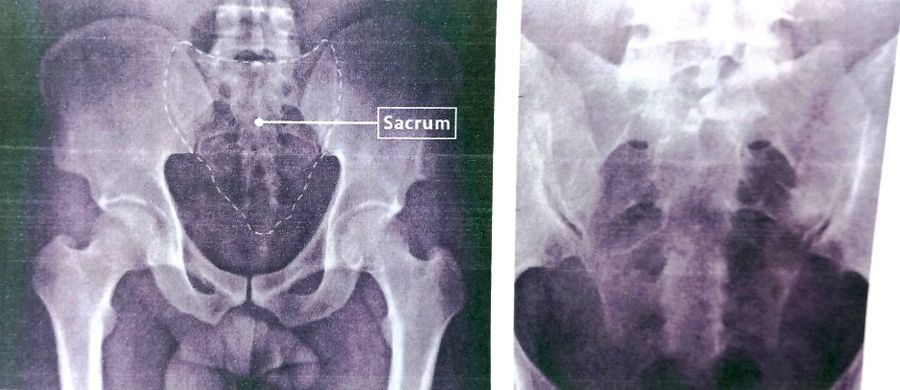
الترجمة العربية
Sacrum
صورتان شعاعيتان للحوض، وُسمت في إحداهما منطقة العجز (Sacrum).
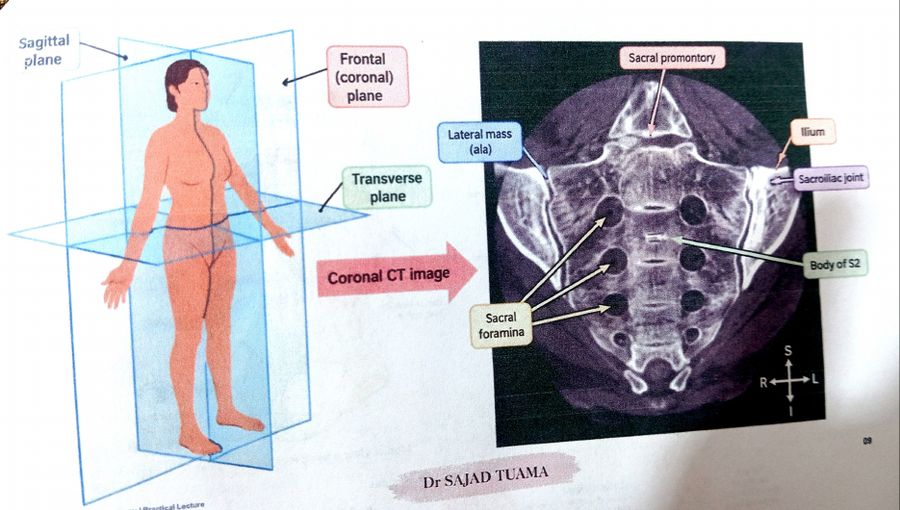
الترجمة العربية
Sagittal
plane
Frontal
(coronal)
plane
Sacral promontory
Lateral mass
(ala)
llium
Transverse
plane
Sacroiliac joint
Body of S2
Coronal CT image
Sacral
foramina
Dr SAJAD TUAMA
المستوى السهمي
المستوى الجبهي (الإكليلي)
المستوى المستعرض
صورة مفراس إكليلية
التسميات: الرعن العجزي؛ الكتلة الوحشية (الجناح)؛ الحرقفة؛ المفصل العجزي الحرقفي؛ جسم S2؛ الثقوب العجزية.
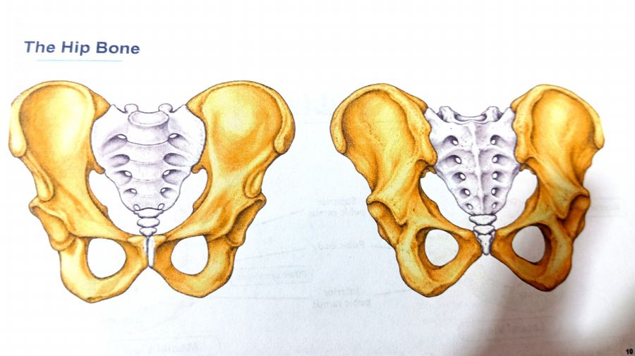
الترجمة العربية
The Hip Bone
عظم الورك
رسمان توضيحيان للحوض يُظهران عظمي الورك (باللون الأصفر) والعجز في منظرين.
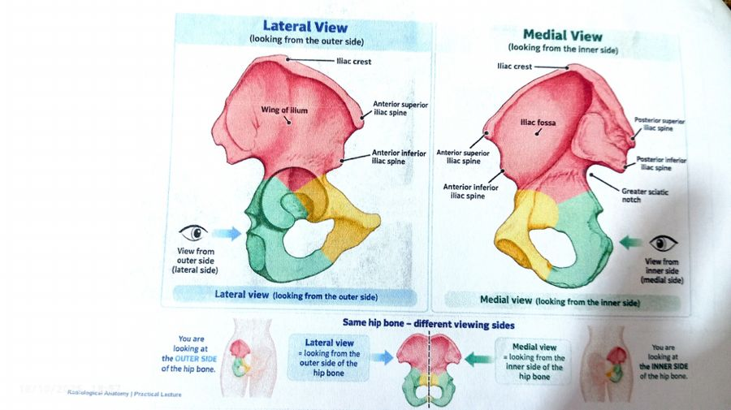
الترجمة العربية
Lateral View
(looking from the outer side)
- lliac crest
Medial View
(looking from the inner side)
Hiac crest
Wing of ilium
Anterior superior
• iliac spine
Iiac fossa
Postarior superior
, llac spine
Anterior inferior
iliac spine
Anterior superior
Iliac spine
Anterior inferior
iliac spine
Postarior Inferiar
Bac spine (
Greater sciatic
notch
View from
outer side
(lateral side)
View from
inner side
(medial side)
You are
looking at
the OUTER SIDE
of the hip bone.
Rod:ologicai Anatomy | Practical Lecture
Lateral view (looking from the outer side)
Same hip bone - different viewing sides
Lateral view
= looking from the
outer side of the
hip bone
Medial view (looking from the inner side)
Medial view
= looking from the
inner side of the
hip bone
You are
looking at
the INNER SIDE
of the hip bone.
منظر جانبي (النظر من الجهة الخارجية)
منظر إنسي (النظر من الجهة الداخلية)
العرف الحرقفي؛ جناح الحرقفة؛ الحفرة الحرقفية؛ الشوكة الحرقفية الأمامية العلوية؛ الشوكة الحرقفية الأمامية السفلية؛ الشوكة الحرقفية الخلفية العلوية؛ الشوكة الحرقفية الخلفية السفلية؛ الثلمة الوركية الكبرى.
المنظر الجانبي: أنت تنظر إلى الجهة الخارجية لعظم الورك.
المنظر الإنسي: أنت تنظر إلى الجهة الداخلية لعظم الورك.
هو نفسه عظم الورك، لكن من جهتين مختلفتين للنظر.
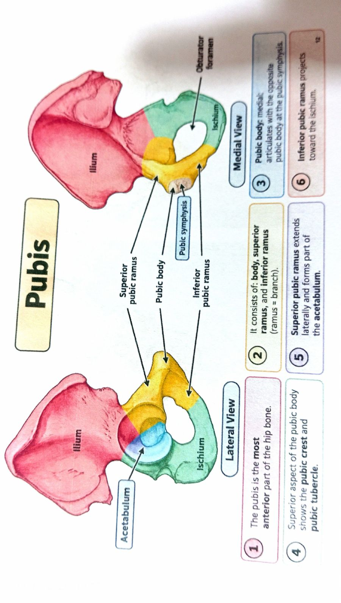
الترجمة العربية
Hlium
Acetabulum
Ischium
Lateral View
The pubis is the most
anterior part of the hip bone.
Superior aspect of the pubic body
shows the pubic crest and
pubic tubercle.
Pubis
Superior
pubic ramus
Pubicbody
Pubic symphysis
Inferior
pubic ramus
It consists of: body, superior
ramus, and inferior ramus
(ramus = branch).
Superior pubic ramus extends
laterally and forms part of
the acetabulum.
llium
Oèturator
foramen
Ischium
Medial View
Pubic body: medial:
articulates with the apposite
pubic body at the pubic symphysis.
Inferior pubic ramus projects
toward the ischium.
الحرقفة؛ الحُقّ؛ الإسك
منظر جانبي
العانة هي الجزء الأكثر أمامية من عظم الورك.
يُظهر الجانب العلوي من جسم العانة العرف العاني والحديبة العانية.
تتكوّن من: الجسم، والفرع العلوي، والفرع السفلي (الفرع = غصن).
يمتد الفرع العاني العلوي نحو الوحشي ويكوّن جزءاً من الحُقّ.
جسم العانة: في الجهة الإنسية يتمفصل مع جسم العانة المقابل عند الارتفاق العاني.
يتجه الفرع العاني السفلي نحو الإسك.
التسميات: العانة؛ الفرع العاني العلوي؛ جسم العانة؛ الارتفاق العاني؛ الفرع العاني السفلي؛ الثقبة السدّادية.
منظر إنسي

الترجمة العربية
(i) Lateral View
Ischium
(ii) Medial View
Ilium
Ilium
Pubis
Ischial spine
Pubis
Obturator
foramen
Superior ischial
ramus
Body of
ischium
Inferior ischiai
ramus
Ischial
tuberosity
Ischiopubic ramus
The ischium forms
the posteroinferior
part of the hip bone.
It consists of a
body, a superior
ramus and an
inferior ramus.
The inferior ischial
ramus joins the inferior
pubic ramus to form
the ischiopubic ramus.
The ischiopubic ramus
encloses part of the
obturator foramen.
The posteroinferior
aspect forms the
ischial tuberosity.
which bears body
weight during sitting.
Near the junction of
the superior ramus
and body is the
ischial spine.
(1) منظر جانبي
(2) منظر إنسي
الإسك؛ الحرقفة؛ العانة؛ الشوكة الإسكية؛ الثقبة السدّادية؛ الفرع الإسكي العلوي؛ جسم الإسك؛ الفرع الإسكي السفلي؛ الحدبة الإسكية؛ الفرع الإسكي العاني.
يكوّن الإسك الجزء الخلفي السفلي من عظم الورك.
يتكوّن من جسم وفرع علوي وفرع سفلي.
يتصل الفرع الإسكي السفلي بالفرع العاني السفلي ليكوّنا الفرع الإسكي العاني.
يحيط الفرع الإسكي العاني بجزء من الثقبة السدّادية.
يكوّن الجانب الخلفي السفلي الحدبة الإسكية التي تحمل وزن الجسم عند الجلوس.
قرب التقاء الفرع العلوي بالجسم توجد الشوكة الإسكية.
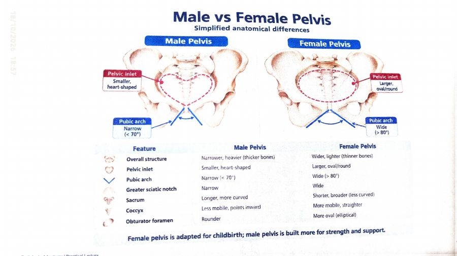
الترجمة العربية
18/10/2026 18:57
Male vs Female Pelvis
Simplified anatomical differences
Male Pelvis
Female Pelvis
Pelvic inlet
Smaller,
heart-shaped
Larger,
oval/round
Pubic arch
Narrow
(< 70°)
Pubic arch
Wide
(> 80")
Feature
Overall structure
Pelvic iniet
Pubic arch
Greater sciatic notch
Male Pelvis
Female Pelvis
Narrower, heavier (thicker bones)
Wider, lighter (thinner bones)
Smaller, heart-shaped
Larger, oval/round
Narrow (< 70°)
Wide (> 80°)
Narrow
Wide
Sacrum
Longer, more curved
Shorter, broader (less curved)
Less mobile, points inward
Соссух
More mobile, straighter
More oval (eiliptical)
Obturator foramen
Rounder
Female pelvis is adapted for childbirth; male pelvis is built more for strength and support.
حوض الذكر مقابل حوض الأنثى
الفروق التشريحية المبسّطة
حوض الذكر
حوض الأنثى
مدخل الحوض
أصغر، قلبي الشكل
أكبر، بيضوي/دائري
القوس العاني
ضيّق (< 70°)
القوس العاني
واسع (> 80°)
الميزة: البنية العامة؛ مدخل الحوض؛ القوس العاني؛ الثلمة الوركية الكبرى؛ العجز؛ العصعص؛ الثقبة السدّادية.
حوض الذكر: أضيق وأثقل (عظام أسمك)؛ مدخل أصغر قلبي الشكل؛ قوس عاني ضيّق (< 70°)؛ ثلمة وركية كبرى ضيّقة؛ عجز أطول وأكثر انحناءً؛ عصعص أقل حركة ويتجه إلى الداخل؛ ثقبة سدّادية أكثر استدارة.
حوض الأنثى: أوسع وأخف (عظام أرق)؛ مدخل أكبر بيضوي/دائري؛ قوس عاني واسع (> 80°)؛ ثلمة وركية كبرى واسعة؛ عجز أقصر وأعرض (أقل انحناءً)؛ عصعص أكثر حركة وأكثر استقامة؛ ثقبة سدّادية أكثر بيضوية (إهليلجية).
حوض الأنثى مهيّأ للولادة، أما حوض الذكر فهو مبني أكثر للقوة والإسناد.
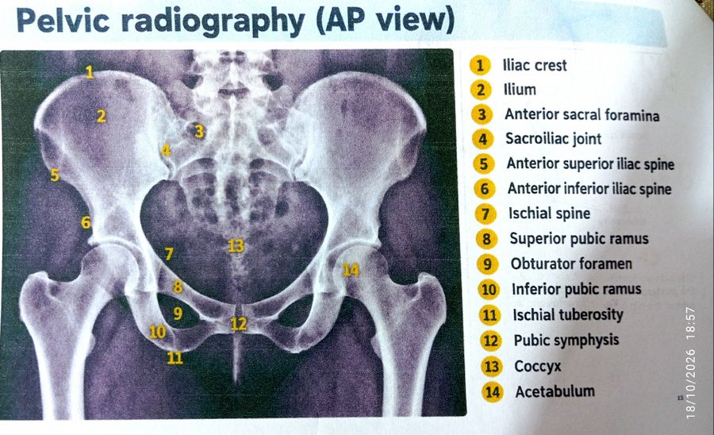
الترجمة العربية
Pelvic radiography (AP view)
1
2
6
13
N
9
10
12
8
9
10
11
12
13
14
Iliac crest
llium
Anterior sacral foramina
Sacroiliac joint
Anterior superior iliac spine
Anterior inferior iliac spine
Ischial spine
Superior pubic ramus
Obturator foramen
Inferior pubic ramus
Ischial tuberosity
Pubic symphysis
Соссух
Acetabulum
49:L 9202/
صورة شعاعية للحوض (إسقاط AP)
التسميات: 1 العرف الحرقفي؛ 2 الحرقفة؛ 3 الثقوب العجزية الأمامية؛ 4 المفصل العجزي الحرقفي؛ 5 الشوكة الحرقفية الأمامية العلوية؛ 6 الشوكة الحرقفية الأمامية السفلية؛ 7 الشوكة الإسكية؛ 8 الفرع العاني العلوي؛ 9 الثقبة السدّادية؛ 10 الفرع العاني السفلي؛ 11 الحدبة الإسكية؛ 12 الارتفاق العاني؛ 13 العصعص؛ 14 الحُقّ.
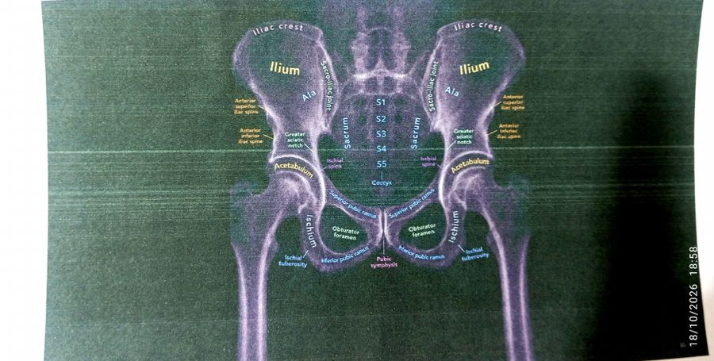
الترجمة العربية
lac crest
llium
Hoof Senones
Sacrum
wnltos
Jerol
S2
S3
S4
Соссу:
Sacro-llac joint
Sacrum
forame
Tliac crest
llium
Ala
Ischium
18/10/2026
18:58
صورة شعاعية للحوض مع التسميات: العرف الحرقفي؛ الحرقفة؛ الجناح؛ المفصل العجزي الحرقفي؛ العجز (S2 وS3 وS4)؛ العصعص؛ الثقوب العجزية؛ الإسك.

الترجمة العربية
Right
hemi-pelvis
Obturator
foramen
Sacroiliac
joints
Sacrum
Pelvic ring
Pubic
symphysis
Left
hemi-pelvis
Obturator
foramen
نصف الحوض الأيمن
نصف الحوض الأيسر
الثقبة السدّادية
المفصلان العجزيان الحرقفيان
العجز
الحلقة الحوضية
الارتفاق العاني

الترجمة العربية
lliac
fossa
Sth lumbar
vertebra
Sacro-iliac
joint
—lliac crest
Hip joint
Neck of
femur
Greater
trochanter
Ist sacral arches
2nd sacral arches
Anterior
superior
iliac spine
Anterior
inferior
iliac spine
Ischial spine
Ischial
tuberosity
R
18/10/2026 18:58
Obturator
tanmon
Superior pubic ramus
Inferior pubic ramus
الحفرة الحرقفية؛ الفقرة القطنية الخامسة؛ المفصل العجزي الحرقفي؛ العرف الحرقفي؛ مفصل الورك؛ عنق عظم الفخذ؛ المدوّر الكبير؛ القوسان العجزيان الأول والثاني؛ الشوكة الحرقفية الأمامية العلوية؛ الشوكة الحرقفية الأمامية السفلية؛ الشوكة الإسكية؛ الحدبة الإسكية؛ الثقبة السدّادية؛ الفرع العاني العلوي؛ الفرع العاني السفلي؛ R = الجهة اليمنى.
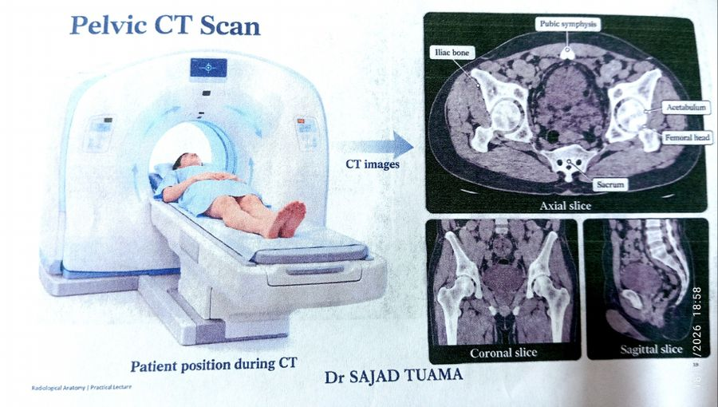
الترجمة العربية
Pelvic CT Scan
Pubic symphysis
Iliac bone
Acetabulum
Femoral head
CI images
SCrum
Axial slice
Patient position during C1
Coronal slice
Sagittal slice
2026 18:58
Radofogical Anatamy | Practical Lecture
Dr SAJAD TUAMA
مفراس الحوض
الارتفاق العاني؛ العظم الحرقفي؛ الحُقّ؛ رأس عظم الفخذ؛ العجز
صور المفراس
مقطع محوري
وضعية المريض أثناء المفراس
مقطع إكليلي
مقطع سهمي
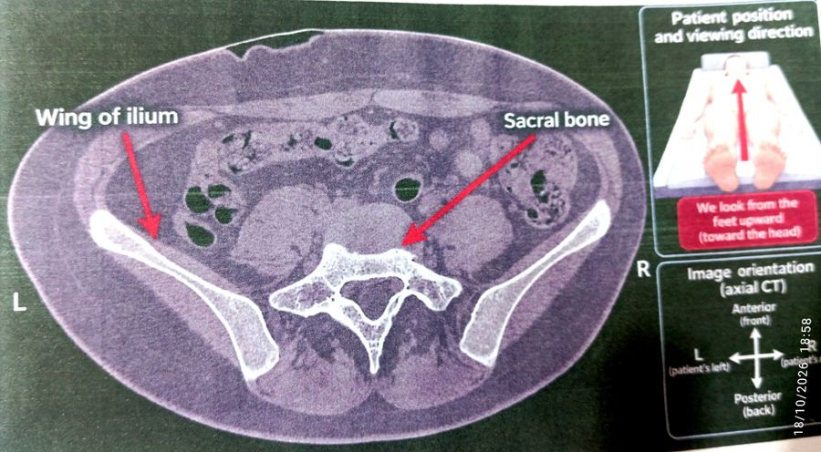
الترجمة العربية
Wing of ilium
L
Sacral bone
Patient position
and viewing direction
R
We look from the
feet upward
(toward the head)
Image orientation
(axial CT)
Anterior
(front)
(patient's left)
+
Posterior
(back)
18/10/202
جناح الحرقفة؛ عظم العجز
وضعية المريض واتجاه النظر
ننظر من القدمين إلى الأعلى (باتجاه الرأس)
اتجاهات الصورة (المفراس المحوري): أمامي، خلفي، L (يسار المريض)، R (يمين المريض)
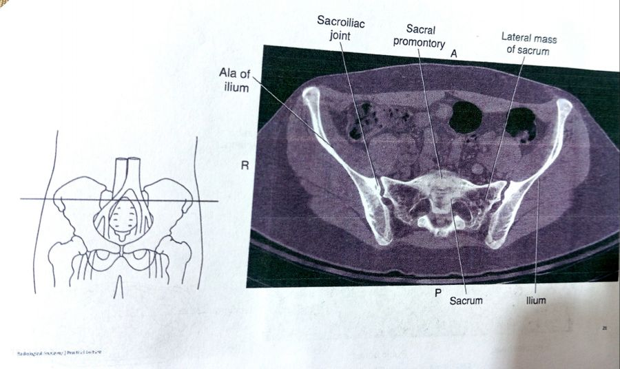
الترجمة العربية
Sacroiliac
joint
Sacral
promontory
Lateral mass
of sacrum
Ala of.
ilium
P
Sacrum
llium
Padalatealayan:Pranasvore
المفصل العجزي الحرقفي؛ الرعن العجزي؛ الكتلة الوحشية للعجز؛ جناح الحرقفة؛ العجز؛ الحرقفة؛ P = خلفي.

الترجمة العربية
Axial CT of the Pelvis
Acerabuium
Superior
pubic ramus
Femoral
Greate
trochanbe
Ischial
Ischium
FIG. 8.15 Axial CT of acetabulum and superior pubic ramus.
Body of
paa Dor
A
Pubic
symphysis
R
Greater
trochanter
FIG. 8.16 Axial CT with pubic symphysis.
Ischial
tuberosity
Palcatre kvasenwiceesta
Axial CT of the Pelvis
Level 1: Acetabulum and Superior Pubic Ramus
Acetabulum
tschial
spine
Level 2: Inferior Pubic Ramus and Ischial Tuberosil
المفراس المحوري للحوض
الحُقّ؛ الفرع العاني العلوي؛ عنق عظم الفخذ؛ المدوّر الكبير؛ الإسك؛ جسم العانة؛ الارتفاق العاني؛ الحدبة الإسكية؛ الشوكة الإسكية.
الشكل 8.15: مقطع مفراس محوري للحُقّ والفرع العاني العلوي.
الشكل 8.16: مقطع مفراس محوري مع الارتفاق العاني.
المفراس المحوري للحوض بمستويين:
المستوى 1: الحُقّ والفرع العاني العلوي
المستوى 2: الفرع العاني السفلي والحدبة الإسكية
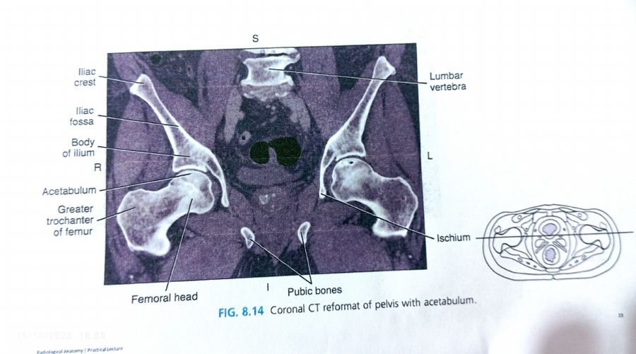
الترجمة العربية
lliac
crest
Lumbar
vertebra
lliac
fossa
Body
of ilium
R
Acetabulum
Greater
trochanter
of femur
- Ischium
Femoral head
Pubic bones
FIG. 8.14 Coronal CT reformat of pelvis with acetabulum.
18:58
banersiamyiPrdealetas
العرف الحرقفي؛ الفقرة القطنية؛ الحفرة الحرقفية؛ جسم الحرقفة؛ الحُقّ؛ المدوّر الكبير لعظم الفخذ؛ الإسك؛ رأس عظم الفخذ؛ عظما العانة؛ R = الجهة اليمنى.
الشكل 8.14: إعادة بناء إكليلية بالمفراس للحوض يظهر فيها الحُقّ.
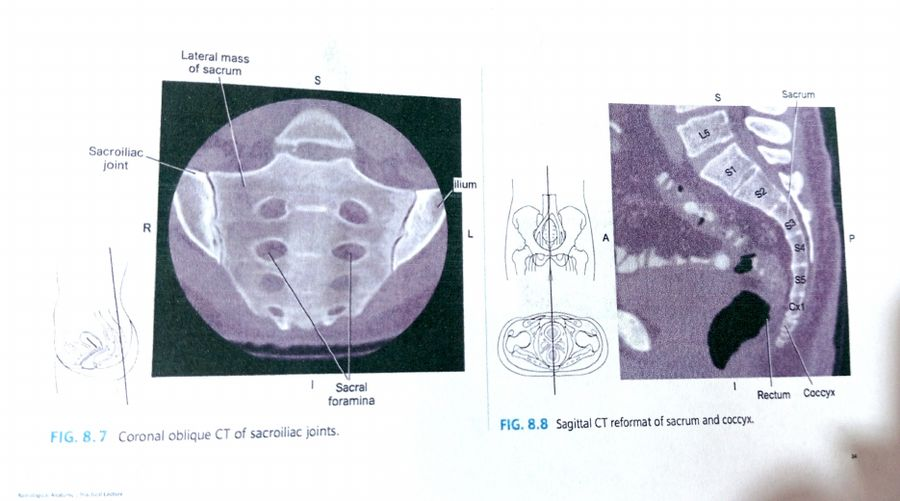
الترجمة العربية
Lateral mass
of sacrum
Sacrum
Sacroiliac.
Joint
ilum
R
Sacral
foramina
Rectum Соссух
FIG. 8.8 Sagittal CT reformat of sacrum and cocсyx.
FIG. 8.7 Coronal oblique CT of sacroiliac joints.
الكتلة الوحشية للعجز؛ العجز؛ المفصل العجزي الحرقفي؛ الحرقفة؛ الثقوب العجزية؛ المستقيم؛ العصعص؛ R = الجهة اليمنى.
الشكل 8.8: إعادة بناء سهمية بالمفراس للعجز والعصعص.
الشكل 8.7: مفراس إكليلي مائل للمفصلين العجزيين الحرقفيين.

الترجمة العربية
Ala (wing) of ilium
lliac crest
L5 vertebral body
S1 sacral foramen
Arcuate line
lliac fossa
Posterior
inferior
iliac spine
Acetabulum
Anterior
superior
iliac spine
Anterior
inferior
iliac spine
Obturator foramen
Superior ramus
of ischium
Ischial tuberosity
- Superior pubic
ramus
Pubic tubercle
Inferior ramus of ischium
Inferior pubic ramus
10/2026 18:59
Mium
Femoral
Sacra
rsacrum
L2
L3
L4
L5
S3
S4
S5
шnбe
Шо(аетноте"5
cunit
جناح الحرقفة؛ العرف الحرقفي؛ جسم الفقرة L5؛ الثقبة العجزية الأولى S1؛ الخط المقوّس؛ الحفرة الحرقفية؛ الشوكة الحرقفية الخلفية السفلية؛ الحُقّ؛ الشوكة الحرقفية الأمامية العلوية؛ الشوكة الحرقفية الأمامية السفلية؛ الثقبة السدّادية؛ الفرع العلوي للإسك؛ الحدبة الإسكية؛ الفرع العاني العلوي؛ الحديبة العانية؛ الفرع السفلي للإسك؛ الفرع العاني السفلي.

الترجمة العربية
Pelvic MRI Indications
Indications for Pelvic MRI
• Occult fractures
Bone marrow edema
Avascular necrosis of femoral head
Sarcoilittis
Muscle and tendon injuries
Labral injury of the hip
Pelvic tumors
Infection / osteomyelitis
Soft tissue assessment
• When X-ray or CT is inconclusive
Axial Pelvic MRI Anatomy (Level of Femoral Heads)
Urinary bladder
- Urinary bladder
lumen
Axial Abdominal/Pelvic MRI Anatomy (Level of L5 Vertebra)
Common femoral
artery and vein
Femoral head
Greater
trochanter
Innominate bone-
Ischial spine
Соссух
دواعي رنين الحوض
دواعي فحص الرنين المغناطيسي للحوض
• الكسور الخفية
• وذمة نقي العظم
• النخر اللاوعائي لرأس عظم الفخذ
• التهاب المفصل العجزي الحرقفي
• إصابات العضلات والأوتار
• إصابة الشفا الحُقّي لمفصل الورك
• أورام الحوض
• العدوى/التهاب العظم والنقي
• تقييم الأنسجة الرخوة
• عندما تكون الأشعة السينية أو المفراس غير حاسمة
تشريح الرنين المحوري للحوض (بمستوى رأسي عظم الفخذ)
المثانة البولية؛ تجويف المثانة؛ الشريان والوريد الفخذيان المشتركان؛ رأس عظم الفخذ؛ المدوّر الكبير؛ العظم غير المسمّى (عظم الورك)؛ الشوكة الإسكية؛ العصعص.
تشريح الرنين المحوري للبطن والحوض (بمستوى الفقرة L5)

الترجمة العربية
Anatomy is the key to
understanding pelvic imaging.
Thank you
Redalogical Anstemy | Prasticai Lerture
التشريح هو مفتاح فهم تصوير الحوض.
شكراً لكم
التشريح الشعاعي | محاضرة عملية
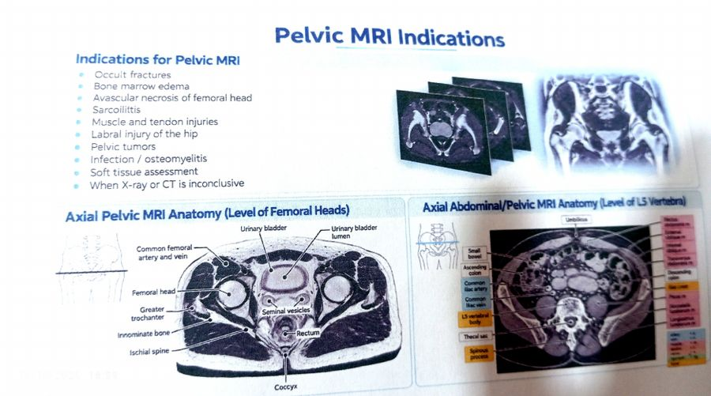
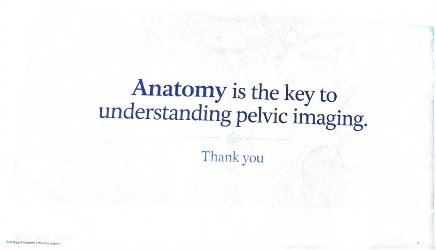
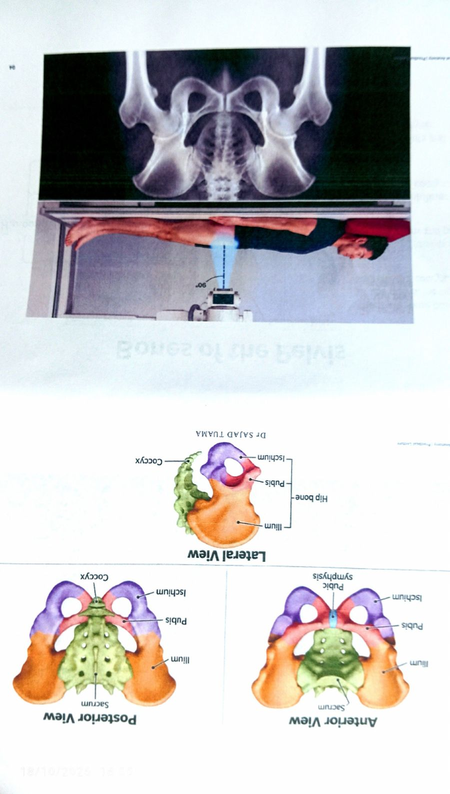
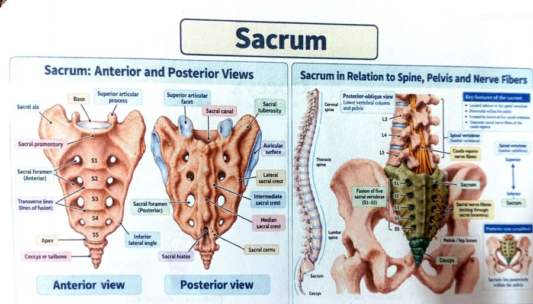
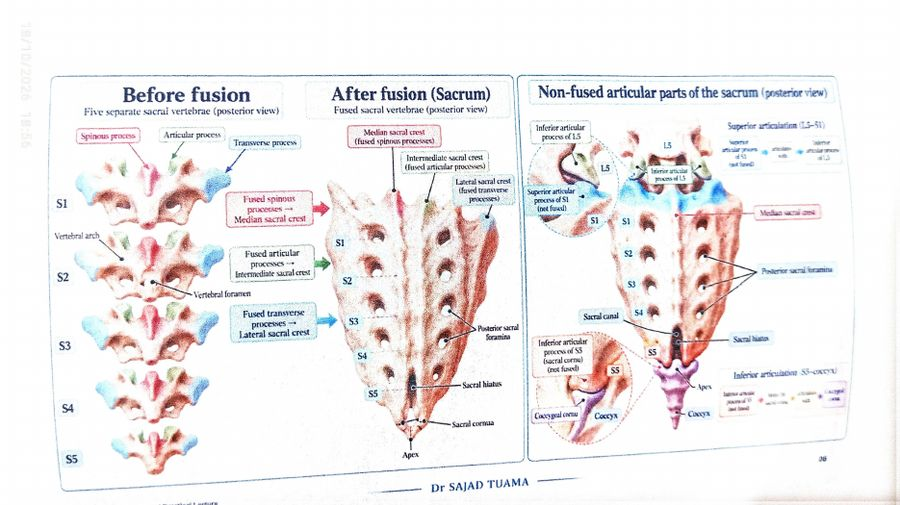


المحاضرة مسموعة
نص الأستاذ بالإنكليزي مثل الأصل · 6.0 دقيقة. اضغط أي جملة تسمعها، أو مصطلح منقّط تسمع لفظه ومعناه.
Bones of the Pelvisعظام الحوض
Bones of the Pelvis
There are three bones of the pelvis: the hip bone, sacrum and coccyx.
Hip bone consists of: ilium, ischium and pubis.
Posterior midline: sacrum and coccyx.
Ring joints: sacroiliac joints and pubic symphysis.
Sacrumالعجز
Sacrum
Sacrum: Anterior and Posterior Views
Sacral promontory
Transverse lines (lines of fusion)
Sacral hiatus
Sacrum in Relation to Spine, Pelvis and Nerve Fibers
Before fusion / After fusion (Sacrum)
Fused spinous processes → Median sacral crest
Fused articular processes → Intermediate sacral crest
Fused transverse processes → Lateral sacral crest
Coccyx; Sacrum on X-ray and CTالعصعص، والعجز في الأشعة والمفراس
Coccyx; Sacrum on X-ray and CT
Coccyx
Tailbone - terminal part of the vertebral column
The coccyx (tailbone) is the terminal part of the vertebral column.
It is formed by 4 fused vertebrae, giving it a triangular shape.
Base: superior, articulates with the sacrum.
Apex: inferior end of the vertebral column.
Lateral surfaces show the small transverse process of Co1.
Coccygeal cornua of Co1 project upward to articulate with the sacral cornua.
Sacrum
The Hip Bone: Lateral and Medial Viewsعظم الورك: المنظران الوحشي والإنسي
The Hip Bone: Lateral and Medial Views
The Hip Bone
Lateral view = looking from the outer side of the hip bone
Medial view = looking from the inner side of the hip bone
You are looking at the OUTER SIDE of the hip bone.
You are looking at the INNER SIDE of the hip bone.
Same hip bone - different viewing sides
Pubisالعانة
Pubis
The pubis is the most anterior part of the hip bone.
It consists of: body, superior ramus, and inferior ramus (ramus = branch).
Pubic body: medial; articulates with the opposite pubic body at the pubic symphysis.
Superior aspect of the pubic body shows the pubic crest and pubic tubercle.
Superior pubic ramus extends laterally and forms part of the acetabulum.
Inferior pubic ramus projects toward the ischium.
Ischiumالإسك
Ischium
The ischium forms the posteroinferior part of the hip bone.
It consists of a body, a superior ramus and an inferior ramus.
The inferior ischial ramus joins the inferior pubic ramus to form the ischiopubic ramus.
The ischiopubic ramus encloses part of the obturator foramen.
The posteroinferior aspect forms the ischial tuberosity, which bears body weight during sitting.
Near the junction of the superior ramus and body is the ischial spine.
Male vs Female Pelvisحوض الذكر وحوض الأنثى
Male vs Female Pelvis
Simplified anatomical differences
Overall structure: Narrower, heavier (thicker bones) | Wider, lighter (thinner bones)
Pelvic inlet: Smaller, heart-shaped | Larger, oval/round
Pubic arch: Narrow (< 70°) | Wide (> 80°)
Greater sciatic notch: Narrow | Wide
Sacrum: Longer, more curved | Shorter, broader (less curved)
Coccyx: Less mobile, points inward | More mobile, straighter
Obturator foramen: Rounder | More oval (elliptical)
Female pelvis is adapted for childbirth; male pelvis is built more for strength and support.
Pelvic radiography (AP view)الصورة الشعاعية للحوض (الأمامية الخلفية)
Pelvic radiography (AP view)
Iliac crest
Ilium
Anterior sacral foramina
Sacroiliac joint
Anterior superior iliac spine
Anterior inferior iliac spine
Ischial spine
Superior pubic ramus
Obturator foramen
Inferior pubic ramus
Ischial tuberosity
Pubic symphysis
Coccyx
Acetabulum
Pelvic CT Scanمفراس الحوض
Pelvic CT Scan
Patient position during CT
Axial slice
Coronal slice
Sagittal slice
Patient position and viewing direction: We look from the feet upward (toward the head)
Image orientation (axial CT): Anterior (front), Posterior (back)
Axial CT of the Pelvis
Level 1: Acetabulum and Superior Pubic Ramus
Level 2: Inferior Pubic Ramus and Ischial Tuberosity
FIG. 8.15 Axial CT of acetabulum and superior pubic ramus.
FIG. 8.16 Axial CT with pubic symphysis.
FIG. 8.14 Coronal CT reformat of pelvis with acetabulum.
FIG. 8.7 Coronal oblique CT of sacroiliac joints.
FIG. 8.8 Sagittal CT reformat of sacrum and coccyx.
Pelvic MRI Indicationsدواعي رنين الحوض
Pelvic MRI Indications
Indications for Pelvic MRI
Occult fractures
Bone marrow edema
Avascular necrosis of femoral head
Sarcoilittis
Muscle and tendon injuries
Labral injury of the hip
Pelvic tumors
Infection / osteomyelitis
Soft tissue assessment
When X-ray or CT is inconclusive
Axial Pelvic MRI Anatomy (Level of Femoral Heads)
Axial Abdominal/Pelvic MRI Anatomy (Level of L5 Vertebra)
Anatomy is the key to understanding pelvic imaging. Thank you
كل أسئلة المحاضرة: السؤال إنكليزي وتحته عربي، وكل خيار بلغتين، والجواب الصحيح معلّم ويّاه «ليش صح» · 0.4 MB
قراءة الأسئلة تحميلاضغط أي مصطلح منقّط تسمع لفظه ومعناه.